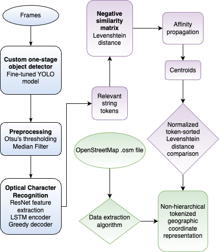

|
Chiling Gabriela Han I'm an undergraduate at Stanford University, where I study computer science and electrical engineering. At Stanford, I work on cross-embodiment foundation models for robotics at Robotics and Embodied AI Lab with Professor Shuran Song. Previously, I've worked on whole body control for humanoids and dexterous manipulation at the Stanford Vision and Learning Lab. |

|
ResearchI'm interested in robot learning, world models, and video planning. I hope to build generalizable robotics models that can reason about the dynamics of the physical world. Selected publications are highlighted. |
|
 |
Geopositioning in GPS Denied Environments Using Street Sign Intersections
Chiling Han IEEE ICACCS, 2024 paper A cost-effective embedded system for offline geocoding in GPS-denied urban environments using fine-tuned YOLO detection, OCR, affinity propagation clustering, and OpenStreetMap intersection matching. |
Projects |
|
HeartStart: Emergency Detection and Autonomous Robot CPR
Chiling Han*, Maha Nawaz*, Cristiano Da Silva*, Nicole Wong* TreeHacks 2026, Grand Prize devpost / code An autonomous mobile robot that monitors heart rate via a wearable sensor, detects cardiac arrest, navigates to the patient using computer vision, and delivers consistent chest compressions until emergency services arrive. |
|
|
STRIDE: Strategic Trajectory Refinement via Influence-guided Data Editing
Chiling Han*, Yash Ranjith*, Timothy Yu* Stanford CS229 Final Project code Rather than filtering noisy robot demonstrations, STRIDE edits them in a learned latent space using TRAK influence scores, a conditional VAE, and a DPO-trained residual editor to improve behavior cloning on Adroit Hand tasks. |
|
Last updated: July 2026 |